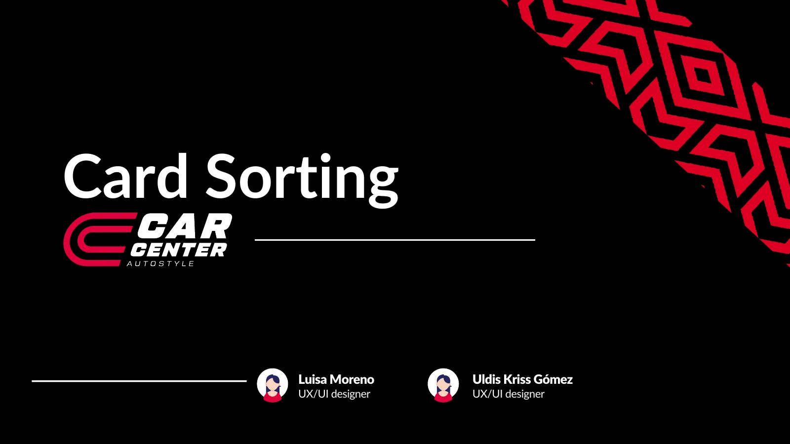
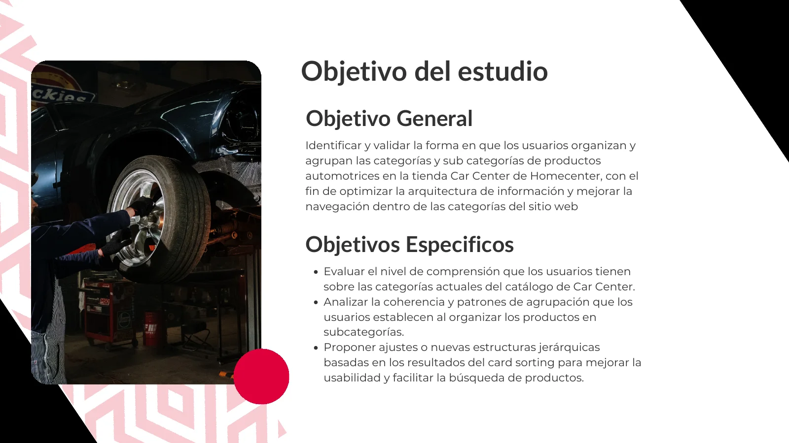
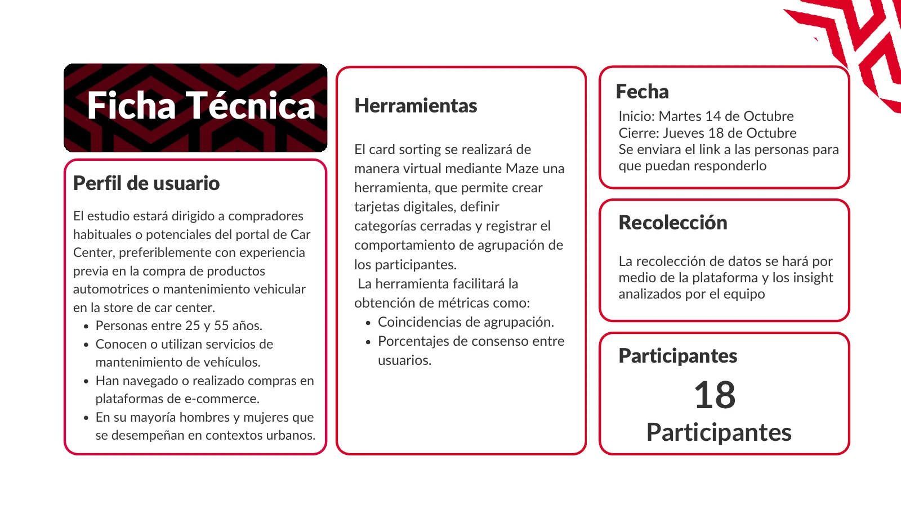
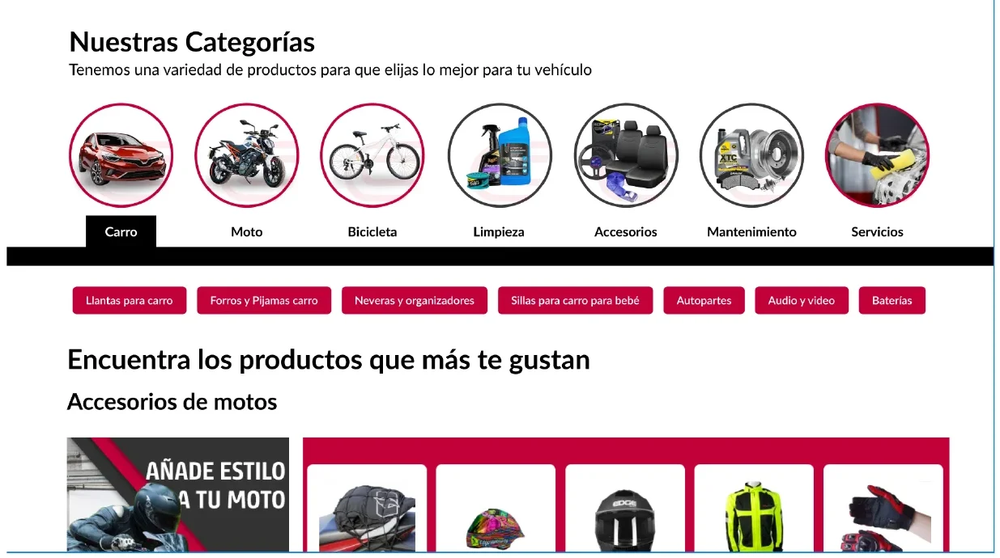

Un card sorting remoto con 18 personas para entender cómo organizan las categorías de productos automotrices, y rediseñar la navegación con su propio lenguaje.

Las categorías de Car Center no se entendían ni se agrupaban de forma natural.
Siete categorías difíciles de ubicar y nombres que los usuarios querían cambiar.
Renombrar, reclasificar y diferenciar por tipo de vehículo.
Un mockup de navegación que parte del tipo de vehículo.
Identificar y validar cómo los usuarios organizan y agrupan las categorías y subcategorías de la tienda Car Center, para optimizar la arquitectura de información y mejorar la navegación del sitio.
Si los nombres actuales de las categorías se entienden o confunden con términos técnicos.
Cómo ordenan las personas los productos dentro de categorías y subcategorías, de forma natural.
Si la estructura propuesta por los usuarios facilita la búsqueda frente a la actual.
Con Luisa Moreno, también diseñadora UX/UI, definí los objetivos, el perfil de participantes y la herramienta, y analizamos los datos juntas.


Pedir a los usuarios que ubiquen tarjetas en categorías ya definidas.
Cómo lo apliquéLos participantes organizaron productos en las categorías actuales de Car Center, y propusieron mejoras.
Medir cuánto coinciden los usuarios al agrupar.
Cómo lo apliquéMaze entregó coincidencias de agrupación y porcentajes de consenso entre participantes.
Leer los comentarios para entender el porqué de cada agrupación.
Cómo lo apliquéCruzamos los patrones con los comentarios abiertos para decidir qué nombres y categorías cambiar.
Los participantes tuvieron dificultad con Movilidad eléctrica, Seguridad vial, Otros accesorios, Taller mecánico, Aditivos, Audio y video y Limpieza.
Taller mecánico sonaba a lugar, no a productos; propusieron Mecánica o Mecánica y partes.
Les pareció ambigua: no comunica qué productos contiene.
La mayoría no identificó productos concretos que pertenecieran a ella.
Términos como Llantas aplican a carro, moto y bicicleta.
El lenguaje actual resultó poco claro para los usuarios, así que alineé la nomenclatura con su vocabulario y reorganicé las categorías que no se sostenían solas.
“Otros accesorios” pasa a “Accesorios”, y se define como transversal a todos los tipos de vehículo.
“Seguridad vial” pasa a subcategoría, porque no tiene peso conceptual suficiente para ser independiente.
“Movilidad eléctrica” se reorganiza dentro de otras secciones, o se evalúa una categoría nueva con nombre más específico.
Los ítems multivehículo se aclaran con complementos: llantas para carro, para moto, para bicicleta.
El siguiente paso fue un mockup: elegir primero carro, moto o bicicleta, y ver debajo las subcategorías con nombres claros.

Nombres de categorías alineados con cómo las personas hablan de sus vehículos.
Decisiones de agrupación respaldadas por 18 participantes, no por intuición interna.
Un mockup listo para probar la nueva navegación.
Este caso muestra la investigación y la propuesta, no resultados medidos tras su implementación.